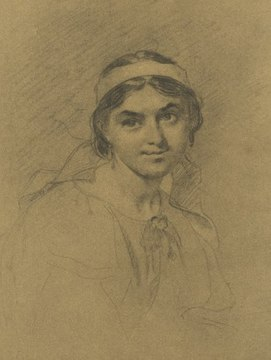
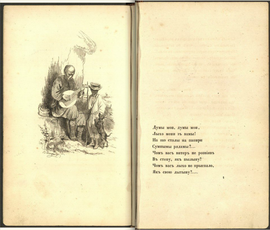

Тарас Шевченко
Життєпис
Тара́с Григо́рович Шевче́нко (25 лютого (9 березня) 1814, с. Моринці, Київська губернія, Російська імперія (нині Звенигородський район, Черкаська область, Україна) — 26 лютого (10 березня) 1861, Санкт-Петербург, Російська імперія) — український поет, прозаїк, мислитель, живописець, гравер, етнограф, громадський діяч. Національний герой i символ України. Діяч українського національного руху, член Кирило-Мефодіївського братства. Академік Імператорської академії мистецтв (1860).

Особисте життя
Шевченко ніколи не був одруженим й не існує відомостей, що у нього були діти. Першим коханням молодого Шевченка була Оксана, його ровесниця, з якою він познайомився 1827 року, коли пас громадську отару в Кирилівці. Родичі та знайомі закоханих були впевнені, що молоді одружаться, щойно досягнуть відповідного віку. Але надії були марними — Тарас у валці свого пана Павла Енгельгардта мусив поїхати до Вільна. Згодом подругу свого дитинства поет не раз згадає у своїх творах і присвятить їй поему «Мар'яна-черниця» Наступною дівчиною, яку він кохав, була віленська швачка Дзюня (Ядвіга) Гусіковська. Дівчина не уявляла свого життя поза рідною землею — Річчю Посполитою, тому шляхи Тараса та Ядвіги швидко розійшлися. Навчаючись в Академії мистецтв, Шевченко захопився дівчиною-натурницею Амалією Клоберг. Портрет дівчини художник підписав «Чевченко» — так його звала молода німкеня. Саме вона стала праобразом Паши в повісті «Художник». Та захоплення швидко вичерпало себе.
Шевченко був закоханий в Марію Василівну, дружину Михайла Максимовича. Все важче переносячи самотність в Петербурзі, у 1858 році він звертався до неї у листі з проханням знайти йому дружину в Україні, боячись що він «так і пропаде бурлакою на чужині». З цією метою поет відвідав Україну 1859 року, де йому полюбилася наймичка Харитина Довгополенко, яку він побачив, гостюючи у В. Шевченка в Корсуні. Але через швидке видворення владою його з України, план одруження на ній не здійснився.[109] Останнім коханням Шевченка була 19-річна петербурзька наймичка Ликера Полусмак, якій Шевченко присвятив вірші «Ликері»
Літературна творчість
Поезія
Упродовж першого періоду літературної діяльності (1837−43 роки) Шевченко написав багато високохудожніх поетичних творів, у яких — поряд із версифікаційними й стилістичними методами народнопісенної поетики — було й чимало нових, оригінальних рис, якими поет значно розширив і збагатив висловлювальні можливості українського вірша (складна й гнучка ритміка; уживання неточних, асонансних і внутрішніх рим; використання цезури й перенесення (анжамбеман); майстерність алітерацій; звукової інструментації та поетичної інтонації; астрофічна будова вірша тощо). Новаторство Шевченко показав й в епітетах, порівнянь, метафор, символів та уособлень.
Проза
У Новопетровському укріпленні Шевченко написав такі повісті російською мовою: «Наймичка» (1853), «Варнак» (1853), «Княгиня» (1853), «Музикант» (1855), «Нещасний» (1855), «Капітанша» (1855), «Близнюки» (1855), «Художник» (1856) і «Прогулянка з задоволенням і не без моралі» (1858), яка була розпочата на засланні й завершена у Нижньому Новгороді. Свої повісті Шевченко підписував псевдонімом «Кобзар Дармограй», через неможливість виступати під власним прізвищем й задля відмежування прози від поезії у його творчості. У повістях Шевченка висловлюється революційно-демократична і волелюбна ідеологія, так само, як і в його поезії. У трьох з них використані сюжети відомих поем — «Наймичка», «Варнак», «Княжна»; інші цілком оригінальні, в них письменник викривав самодержавство, жорстокість кріпосників, аморальність царських офіцерів. У той же час Шевченко-прозаїк з великою теплотою вивів позитивні характери трудових людей, представників світу мистецтв, продемонстрував їх шляхетні і гуманні ідеали, прагнення до освіти

Останні роки
Позбавлений можливості протягом всього заслання працювати в олійному живописі, Шевченко всю увагу віддав графіці і за десять років досяг у ній надзвичайних успіхів. Надалі в нових умовах художник передбачав дальше розвивати і поглиблювати мистецтво графіки. Перед виїздом з Новопетровського укріплення 26 червня 1857 року Шевченко записав у своєму щоденнику, що він вирішив «присвятити себе безроздільно гравюрі акватинта… Бути хорошим гравером, значить бути розповсюджувачем прекрасного і повчального в суспільстві. Значить бути розповсюджувачем світла істини… Найпрекрасніше, найшляхетніше покликання гравера. Скільки витончених творів, доступних тільки багатіям, коптилося б в похмурих галереях без твого чудотворного різця?»
Твори Шевченка, після залишення Новопетровського укріплення, починаються циклом пейзажів, виконаних під час подорожі по Волзі від Астрахані до Нижнього Новгорода, а саме: «В Астрахані», «Камишин», «Поблизу Саратова», «Саратов», «Царів Курган», «Казань», «Проти Казані». Вони переважно створювалися з борта пароплава й малювалися олівцем на вузьких смужках тонованого або білого паперу. Композиційно всі твори мають панорамний характер і відзначаються певною ескізністю. За формальними ознаками вони є прямим продовженням пейзажних начерків, які Шевченко виконав під час Каратауської експедиції 1851 року та перебування в Новопетровському укріпленні.